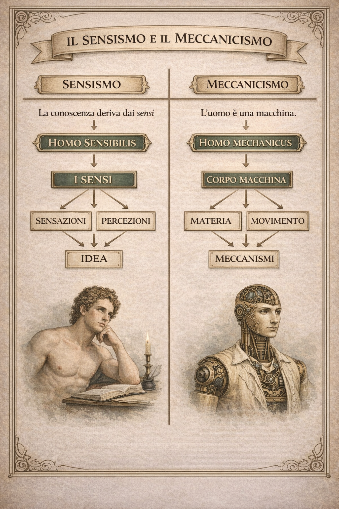

Lo stoicismo
Lezione breve: Lo Stoicismo

Che cos'è lo stoicismo
Lo stoicismo è una filosofia nata nell'antica Grecia nel III secolo a.C. con Zenone di Cizio e sviluppata poi da filosofi come Seneca, Epitteto e Marco Aurelio.
L'idea centrale è semplice: l'uomo non può controllare ciò che accade nel mondo, ma può controllare il proprio atteggiamento davanti agli eventi.
La vera libertà non consiste nel cambiare il destino, ma nel dominare se stessi.
La distinzione fondamentale
Gli stoici distinguono tra due tipi di cose:
Cose che dipendono da noi
le nostre decisioni
i nostri giudizi
il modo in cui reagiamo agli eventi
Cose che non dipendono da noi
la fortuna
la salute
il successo
ciò che fanno gli altri
gli eventi della storia
La saggezza consiste nel concentrarsi solo su ciò che dipende da noi.
L'ideale dello stoico
Lo stoico cerca di vivere secondo ragione e virtù.
Questo significa:
accettare gli eventi che non possiamo cambiare
non lasciarsi dominare dalle passioni
mantenere dignità anche nella sfortuna
Per lo stoico il bene vero non è il piacere, la ricchezza o il potere. Il vero bene è la virtù, cioè la coerenza con la propria coscienza.
Un esempio famoso
L'imperatore romano Marco Aurelio scrive nei suoi pensieri:
"Non sono le cose che accadono a turbare gli uomini, ma il giudizio che gli uomini danno delle cose."
Questo significa che spesso la sofferenza nasce dal modo in cui interpretiamo gli eventi.
Perché lo stoicismo è importante
Lo stoicismo è una filosofia della forza interiore.
Insegna che:
il mondo non è sempre giusto
molte cose sfuggono al nostro controllo
ma l'uomo può sempre conservare la propria dignità.
In altre parole:
non possiamo decidere cosa accade, ma possiamo decidere chi essere davanti a ciò che accade.